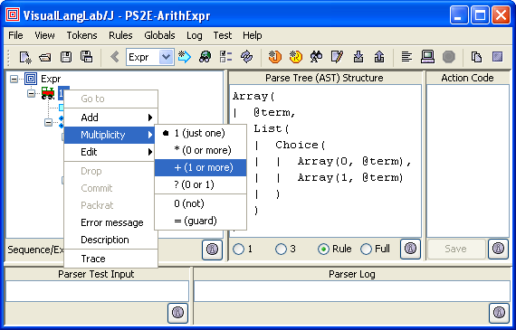

Figure-2. The icons of the toolbar's dropdown list
|
For Ver-10.10 or higher only! If you are using an older version, follow this tutorial instead. Beginning Ver-10.01, the title bar of the About VisualLangLab dialog box displays the version number. The latest jar file can be downloaded here: VLL4J.jar. |
Figure-1 below depicts the complete VisualLangLab GUI. The following description details all its features.
The Menu Bar (across the top of the GUI) contains the following menus:
Starting with version 10.21, the toolbar's dropdown list for rule-names uses certain icons to indicate rule characteristics as in Figure-2 below. A green arrow-icon indicates that the rule includes one or more action-code funtions. The same icon in the magenta color (as for ExprTester in the figure) indicates that that rule has action-code functions designed for testing. A red border around the basic icon (as for factor) indicates the presence of one or more errors in the rule.
Figure-2. The icons of the toolbar's dropdown list
The Tool Bar just below the Menu Bar enables quick invocation of commonly used operations:
 ),
Open (
),
Open ( ),
Save (
),
Save ( ),
and SaveAs (
),
and SaveAs ( )operations
)operations )
to display last viewed parser-rule (or grammar-tree)
)
to display last viewed parser-rule (or grammar-tree) ),
and Rename (
),
and Rename ( ) operations
) operations ),
New regex (
),
New regex ( ),
Edit (
),
Edit ( ),
Find (),
Import tokens (
),
Find (),
Import tokens ( ), and
Export tokens () operations
), and
Export tokens () operations ),
Parse file (
),
Parse file ( ), and
Stop parsing (
), and
Stop parsing ( ) operations
) operations ), and
Clear log () operations
), and
Clear log () operationsAll toolbar buttons have suggestive tool-tip texts to facilitate use.
The Grammar Tree is the JTree at the top left of the GUI (below the toolbar). It represents the structure of the selected parser-rule (see tool-bar combo-box above). A pop-up context menu is displayed when any node of the grammar-tree is right-clicked. This menu (shown in Figure-1 above) supports grammar-tree editing functions described further in Editing the Grammar Tree.
The Parse Tree (or AST) area is on the right of the grammar-tree (below the toolbar). The structure of the AST produced by the selected grammar-tree node is displayed in this area. The radio buttons (labeled 1, 3, §, and ∞) along the bottom of this area determine the display depth. The values 1 and 3 are literal depths, while § (the section symbol) denotes rule depth, and ∞ (the infinity symbol) displays the complete AST. The variable-depth display is useful for understanding large ASTs.
The format of the displayed information is described in AST and Action Code.
The action-code area is the text area at the top right (below the toolbar). This editable area can be used to optionally provide any action-code for the selected grammar-tree node. The action-code must be a Javascript function with one argument. More details and examples can be found in Action Code Design.
The two text areas along the bottom of the GUI (Parser Test Input and Parser Log) constitute the testing area.
The editable Parser Test Input area on the left is used
for providing test input to the parser.
Any text typed into this area is read by the parser under development
when the Parse input
() toolbar button is clicked (or the
Test -> Parse input menu item is selected.
The Parser Log area is where any output from the parser run appears. Error messages are printed in red, while normal output is printed in black. When a parser runs to completion successfully, the AST produced is printed out along with some run-time and memory utilization statistics.
Testing within VisualLangLab is described in detail in Testing Parsers.